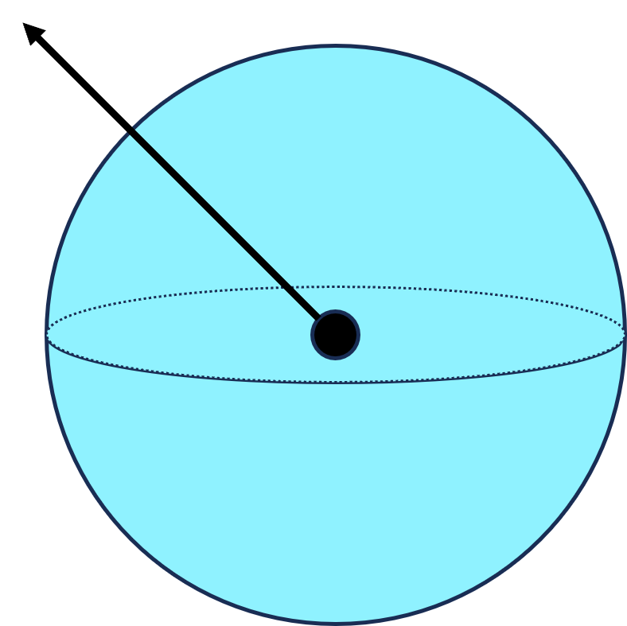
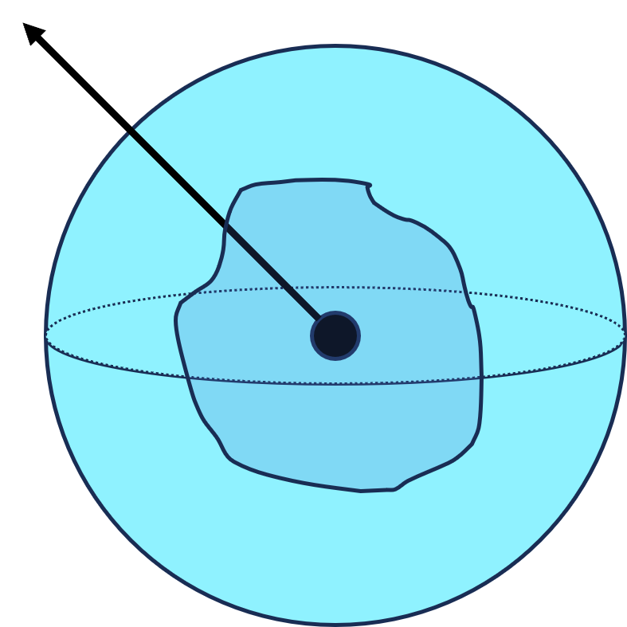
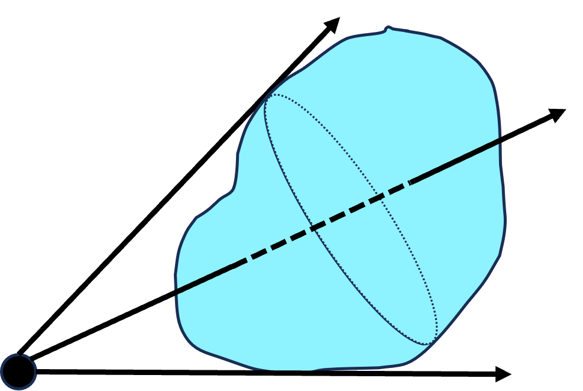

| 公式 | $$\oint_S\boldsymbol{D}\mathrm{d}\boldsymbol{S} = Q$$ $$\Phi_E = \unicode{x222F}_SE\cos\theta\mathrm{d}S = \frac{1}{\epsilon_0}\sum_{(S内)}q$$ | $$\boldsymbol{D}$$ | 电位移矢量 |
| \(\boldsymbol{S}\) | 闭合曲面（高斯面） | ||
| \(Q\) | 闭合面内自由电荷代数和 | ||
| 描述 | 静电场中，通过任意闭合曲面的电位移通量等于闭合面内自由电荷的代数和。 | ||

以点电荷\(q\)为中心，取任意长度\(r\)为半径做闭合球面\(S\)。在\(S\)上求面元d\(S\)，其法线\(\boldsymbol{n}\)与面元处的电场强度\(\boldsymbol{E}\)方向相同，故通过\(\mathrm{d}S\)的电通量为：
$$\mathrm{d}\Phi_e = \boldsymbol{E}\mathrm{d}\boldsymbol{S} = E\cos0\mathrm{d}S = \frac{1}{4\pi\epsilon_0}\frac{q}{r^2}\mathrm{d}S$$通过整个闭合球面\(S\)的电通量为：
$$\Phi_e = \oint_S\mathrm{d}\Phi_e = \oint_S \frac{1}{4\pi\epsilon_0}\frac{q}{r^2}\mathrm{d}S = \frac{1}{4\pi\epsilon_0}\frac{q}{r^2}\cdot 4\pi r^2 = \frac{q}{\epsilon_0}$$
作一任意闭合曲面\(S'\)包围点电荷，易知穿过\(S'\)的电场线根数与穿过\(S\)的电场线根数相等，即：
$$\Phi_e = \frac{q}{\epsilon_0}$$
在点电荷外作一任意闭合曲面\(S''\)，其外部的电荷发出的电场线进入该闭合曲面的根数与穿过闭合曲面的根数相等，故闭合曲面外的点电荷对该闭合曲面上的电场强度无贡献，即：
$$\Phi_e = \frac{q}{\epsilon_0} = 0$$根据场强叠加原理，有：
$$\Phi_e = \oint_S\boldsymbol{E}\cdot\mathrm{d}\boldsymbol{S} = \sum\limits_{i=1}^n\oint_S\boldsymbol{E}_i\cdot\mathrm{d}\boldsymbol{S} = \frac{\sum q_i}{\epsilon_0}$$电介质中，总电场\(\boldsymbol{E}\)是自由电荷电场强度\(\boldsymbol{E}_0\)和极化电荷电场强度\(\boldsymbol{E}'\)的叠加。
$$\oint_S\boldsymbol{E}\mathrm{d}\boldsymbol{S} = \frac{1}{\epsilon_0}(\sum q_i + \sum q_i')$$ $$\because \oint_S\boldsymbol{P}\mathrm{d}\boldsymbol{S} = -\sum q_i'$$极化强度与极化电荷的关系式 $$\therefore \oint_S\boldsymbol{D}\mathrm{d}\boldsymbol{S} = \oint_S \epsilon_0\boldsymbol{E} + \boldsymbol{P}\mathrm{d}\boldsymbol{S} = \sum q_i = Q$$没有介质存在时，\(\boldsymbol{D} = \epsilon_0\boldsymbol{E_0}\)，公式依然成立。
[注]此处的\(V\)为整个空间，由于在无电荷的空间中\(\rho=0\)，因此对结果无影响.